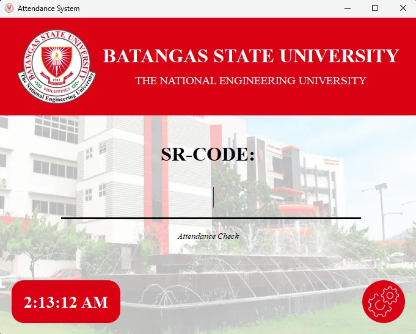
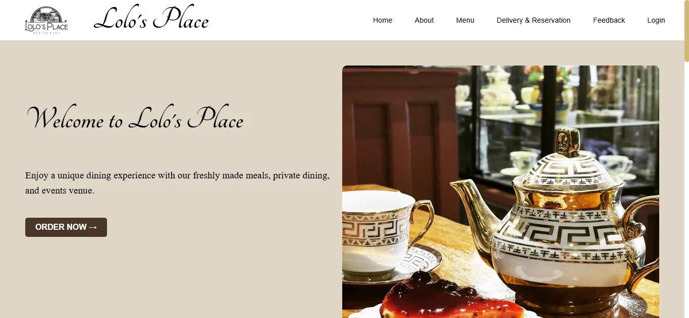
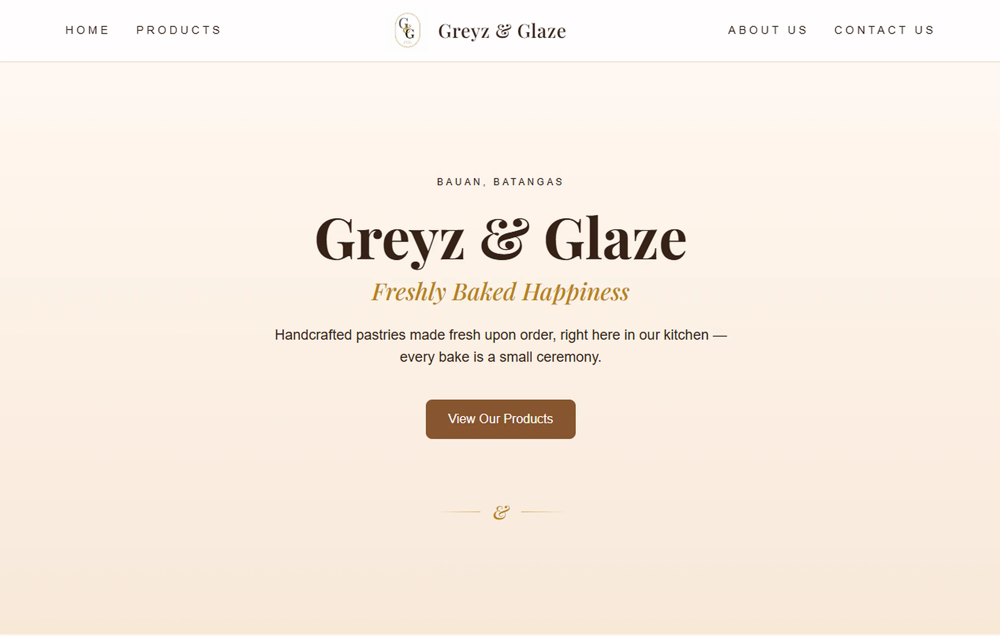

Projects
-
Student Attendance App – Developed to assist university extension library campuses in recording and monitoring student attendance using PyQt5 and SQLite.

-
Web Based Management System and Point of Sales with Applied Business Analytics for Lolo’s Place – Developed Lolo's Place to use React, HTML, CSS, and JavaScript to process POS transactions, manage inventory, track sales trends, and handle deliveries and customer reservations.

-
Greyz & Glaze – Responsive Bakery Business Website – Developed the front-end of Greyz & Glaze, a responsive bakery business website featuring a product catalog, commission pricing, and contact pages. Implemented a mobile-first interface using HTML, Tailwind CSS, and JavaScript.
View Live Website →

-
GrinSlime - Digital Art Portfolio – Designed and developed a responsive portfolio website for GrinSlime, an independent digital artist. The site focuses on presenting artwork through a clean, image-focused gallery while providing an accessible online presence across desktop and mobile devices. Built with HTML, CSS, and JavaScript.
View Live Website →
-
Mocha's Corner - Digital Art Portfolio – Designed and developed a responsive digital art portfolio for Mocha, creating a dedicated space to showcase artwork through a visually focused gallery. Implemented a responsive layout using HTML, CSS, and JavaScript to provide a consistent browsing experience across devices.
View Live Website →